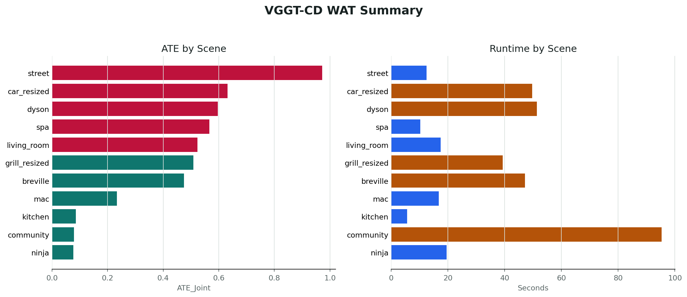

VGGT-CD
Coarse-to-fine bi-temporal point cloud registration and change detection from image sequences. The pipeline reconstructs T1/T2 observations with VGGT, aligns them with Sim(3) registration, and exports reproducible pose metrics.
11WAT scenes in summary.csv
0.4316Mean ATE
33.14sMean time per scene
18.17GBMean GPU memory
Pipeline
1. Load Sequences
Read T1/T2 image folders and COLMAP binary poses from each scene.
2. VGGT Reconstruction
Predict camera poses, depth, confidence maps, and dense 3D points.
3. Coarse Sim(3)
Select keyframes and estimate an initial cross-time similarity transform.
4. Fine Alignment
Refine static correspondences with voxel hashing and one-shot SVD.
Results Snapshot

This chart is generated from experiments/results/summary.csv.
Summary Metrics
| Scenes | ATE mean | ATE RMSE | RTE mean | RRE mean | Time/scene |
|---|---|---|---|---|---|
| 11 | 0.4316 | 0.4631 | 0.1933 | 0.3598 | 33.14 s |
Usage
export VGGT_MODEL_PATH=/path/to/model.pt
python run_inference.py \
--data_root /path/to/WAT \
--scene breville \
--seq_t1 IMG_9184 \
--seq_t2 IMG_9185 \
--output_root ./eval_results \
--model_path "$VGGT_MODEL_PATH" \
--num_keyframes 5 \
--conf_threshold 50
python eval_poses_1.py --eval_root ./eval_resultsLarge model checkpoints and generated inference artifacts are ignored by git.
Baselines
| Script | Method |
|---|---|
run_baseline_vggt_only.py | Independent VGGT T1/T2 inference |
baseline_icp.py | VGGT point clouds plus ICP |
run_baseline_fgr.py | Fast Global Registration baseline |
run_baseline_geotransformer.py | External GeoTransformer baseline |